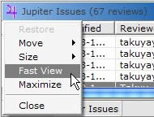

| Jupiter | |
Jupiter User's GuideTakuya Yamashita CSDL-03-11 http://csdl.ics.hawaii.edu/techreports/03-11/03-11.html Last Update: 02/04/2004 3:17 AM 1 IntroductionWhy use a review tool?Why you use a review tool? Well, it's because:
While testing discovered mostly requirements and architectual faults, code review can identify the coding or design faults via human-intellectual brain. Some studies show the extraordinarysuccess at detecting faults during review process.
Pfleeger, Shari lawrence, "Software Engineering : theory and practice", 2nd ed. No matter how inspection process is, review reduces faults at least to some extent. The underling formula in the inspection is that the earlier in the development process a fault is spotted by inspections, the easier and less expensive it is to correct. So, in order to facilitate spotting faults and find a excellent tool, you are here! Why use Jupiter?Why you use the Jupiter rather than any other review tool? Well, Jupiter is:
2 InstallationTo install Jupiter code review plug-in for Eclipse, it would be better to use software update feature of Eclipse. This feature enables you to install or update Jupiter easily when new or updated one is available in the server. The installation process slightly differs between Eclipse 2.x and 3.x stream. Jupiter Update URL Pointerhttp://csdl.ics.hawaii.edu/Tools/Jupiter/Update Eclipse 3.x StreamSelect "Help | Software Updates | Find and Install..", check " Search for new features to install", and then add update site, clicking on the "Add Update Site" button. The name will be something like "Jupiter Update Server" and the URL should be:
Check the new created Jupiter site, then go to the next wizard, select the available Jupiter version. Please note that Eclipse 3.x stream users (i.e. users who have installed Eclipse 3.0 M5 or above) should select the "Jupiter for Eclipse 3.x stream (from 3.0 M5)", then click next to follow the instruction. The users who have installed 3.0 M4 or below should select the "Jupiter for Eclipse 2.x stream (until 3.0 M4)." You can see the popup window message to let you restart Eclipse after following several installation steps so that you can restart your Eclipse. Eclipse 2.x StreamSelect "Help | Software Updates | Update Manager" to open up Install/Update perspective. In the "Feature Update" pane (the left buttonside of the perspective), Right-click (Windows users) on the "Sites to Visit", and select "New | Site Bookmark.." The name of site will be something like "Jupiter Update Server", and the URL should be the same as the 3.x stream above. After the new site creation, click the plus icon of the site to traverse the tree, select "Jupiter for Eclipse 2.x stream (until 3.0 M4)", and select "Jupiter x.x.xxx." You can see the "Install" button on the right side of "Preview" window so that click it and follow the several installtion steps. Finally restart your Eclipse. 3 ConfigurationBefore starting your review, There are a couple of code review settings. To see Jupiter configuration, Select "Window | Preferences | Jupiter" in the preference page.
After this initial preference settings, you can move to either Personal review, Group review, or Revision Phase. 4 Individual Review PhaseTo review source codes, it's simple. Read a code, find what you feel as defect, question, praise, and then add a code review for it. You can see "Code Review" menu on the popup menu if you either:
Let's try to pick some area in a Java source code. select a text region in the Java source code, right-clck and select "Code Review". You can see all the necessary informationare automatically filled out. The reviewer name is what you specified in the general preference page. The assigned to is used for the group reviewphase, but this is automatically filed out if the @author tag in the Java source code exists. You can just ignorethis field in this phase. The Class, Method, Line (Line Number) is also automatically filled out if any. The descriptionfield gives the area in which you want to comments in the particularpart you picked. Since you select a region before right-clicking on the source code, the selected part is automatically copied to the description field. The type field is used to identify the type of the review. In most case, the type falls in "Defect". This means that you might think the issue you picked up is "potentially" defect-oriented, but not necessary it is actually "defect". The decision whether or not will be made in the group review phase. The severity field is used to identify or prioritize the severity of this issue. For example, you can set severity as "Trivial" for the coding standard vaiolation such as using variable name as "msg" (This should be corrected as "mesage"). The resolution field is also determined in the group review phase so that you just leave it alone as "Unset" in this personal review phase. So as Status field, you just make sure "Unresolved" is selected for the Group review phase use. Please keep in your mind that the "Unset" is very importantin this phase because this type will be used to filter the unset reviews out of bunchof reviews in the next Group Review Phase. 5 Team Review Meeting PhaseIn this phase, team members can review multi review files, using team review mode. Individual review files might be shared with team via CVS. It is assumed that all team members committedto CVS their review files in the review directory, which can be specified in Jupiter storage preference, and Eclipse contains all committed review files from CVS. The key point in this phase is how well to use filter function. Well filtered view will give you save much time in the group meeting. To begin code review group meeting mode, you can click the "Group Review Mode" icon on the main tool bar. Should you find the icon, select " Customize Perspective" and select Commands" tag to check "Jupiter" actions (3.x stream) or check "Jupiter" in the other category. After clicking the purple "Team Review Mode" button below, some reviewswill be listed in the Code Review View. The review loaded are from in the code review directory which is defined in the file preference page. Should you see any reviews, please make sure that the review directories set properly or unchecked the "Filters.." button in the Code Review View.
Once the reviews are listed, it's time to filter them. Otherwise you can not use the benefit of this plug-in and can be buriedby the pile of reviews Click the downward triangle icon so as to select the "Filters setting.." and open upthe filter preference setting. Checkthe "Enabled" box and filter eitherperiod, status, resolution, type, and assigned to. Usually you might want to filterby period and resolution. As I mentioned in the personal review phase, the "Unset" type in the Resolution will warn you to be supposed to the review. You can alsofilterthe reviews by period to select one of the day options. If your team reviewed code yesterday, you can choose the filter by "Past a day". but please not that the "a day" means that 24 hours before the reviews are filtered so that it would be safe to choose the "Past 3 days" if your team's review time is not sure within 24 hours ago. Now it's ready to filter them. after clicking OK in the filter preference page, click the "Filters.." icon on the Code Review View. The check icon stands for "the listedreviews have been filtered". The uncheck icon instead stands for the "the listed reviews have not been filtered yet". If you change filter setting in the filter preferencepage, given the "Filters.." icon has been selected, the filter setting change will be reflected directory after you click the OK buttonin the filterpreference page. To see each review, you can just one click on the row of the reviews so that the reviewcontent can be displayed in the code review editor. you can edit it anytime and don't forget to click the "Enter" button after the edit to update them. If you want to see what the actual code the reviewrefers to, double click on the perticular reivew row so that you can jump to the specified reivew position in a srouce code. Let's allocate Jupiter more efficiently.  Single-click on the top left purple jupiter icon, select the "Fast View" to allocate Jupiter Issues view as the pinned view below the set of perspective icons in the left side of the Eclipse. This enables you to open and close the view dynamically so that you can save the space of Eclipse.
To review code, I recomend you to separate the source code (Compilation Unit) editor and the Jupiter editor with two-row-style. Close all editors with Ctrl + Shift + F4. Double-click on a review you did, and open the source code editor and Jupiter editor in the editor part. Drag the tag of the Jupiter editor to just below the border of the bottom of the editor part, and drop it if you can see the downword allow icon there.
After the editor allocation, new source code editor is opened in the part where the existing same edtiors are opened. so does Jupiter editor. The allcated Jupiter is something like this. Finally, when you need to go back the reviewed source code after team traversed source link and lost the way to go back the original jump point, click the "Jump" bottom on the left side of the Jupiter editor. This enables you to jump the original reviewed source code point again.
6 Revision PhaseAfter the team review phase, you can still use the Jupiter plug-in. For the revision phase, you might want to see what is assigned to you, and what you have not done yet so that you can work on what you have to do efficiently. To do that, click the team review mode on the main tool bar to collect reviews in your Eclipse, make sure the "Filters" buttonis checked in the code review view, then click the "Filters settling.." in the downward triangle icon to open up the filter preference page. Make sure the "Enabled" button is checked, define the review period, and check "Where status is" to be selected as "Unresolved" as well as checking "Where assigned to is" to be selected as your name. Optionally if you want to prioritize the issues, check the "Where type is" to be selected as "Defect", for example. After the raised issued was modified or fixed, Change the issue " Status" to be "Resolved" from "Unresolved" in the code review editor, just one clicking the specified review in the code review view.
Last Update: February 4, 2004 3:17 AM |
|
| © 2003 TAKUYA YAMASHITA ALL RIGHTS RESERVED | |